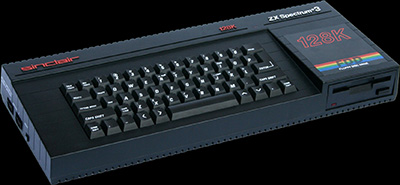
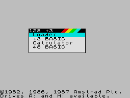

Amstrad's final Sinclair product, released at the same time as the unsuccessful PC200, was the Spectrum +3 (above). It was easily the best-looking and most advanced Spectrum, boasting a proper floppy disk drive, a new ROM and a parallel printer port. The circuit design is radically different to that of any other Spectrum and has far fewer chips on the board. Like its predecessor, the +3 was sold in "Action Packs" with light guns and games included.

However, it was not as successful as the Spectrum +2 and had a number of serious flaws. The new ROMs were incompatible with a lot of old Spectrum software; the disk drive used Amstrad's own peculiar 3-inch format, the disks for which hold only about 350K and cost up to five times more than their 3.5-inch equivalents (that is, when you could find them - not easy nowadays); the machine cost an absurd £250 at a time when the far more advanced Atari ST 520 and Commodore Amiga 500 sold for only £400; and, most of all, the 8-bit market was beginning to collapse as the 16-bit machines swept all before them. Had the +3 been launched a couple of years earlier with a standard 3.5-inch drive, it might have made greater headway against the ST and Amiga.
The +3 made an unannounced second appearance in the shape of the Spectrum +2A - essentially a +3 circuit board in a black +2 case.